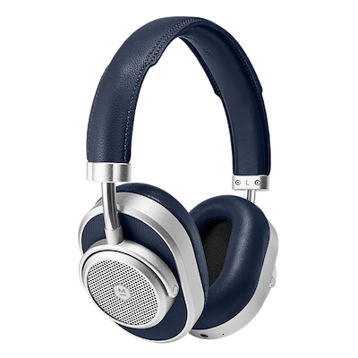
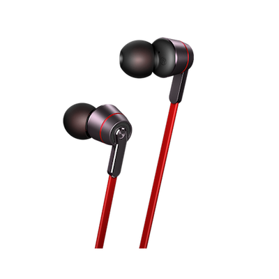
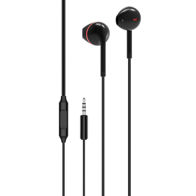
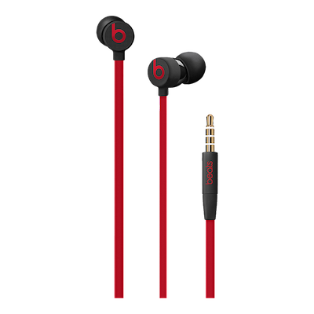
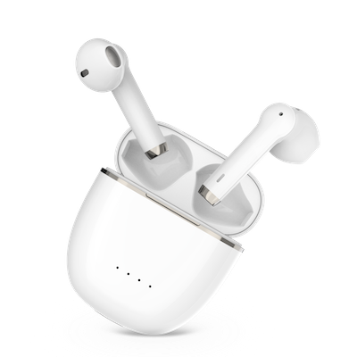
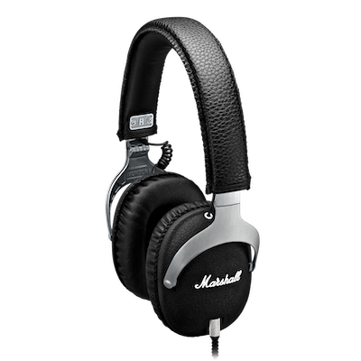
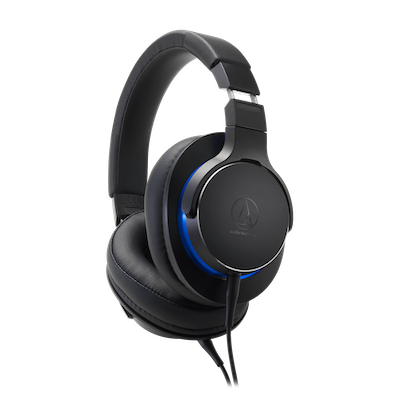
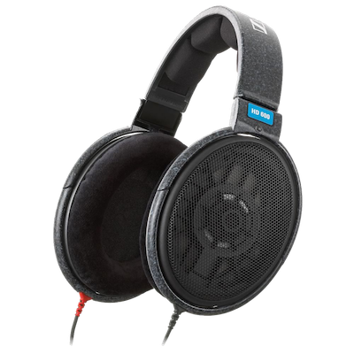
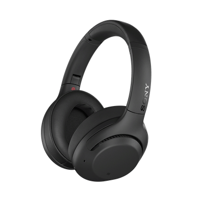

[JPN 2019-07]
ヘッドホンの選び方
音楽聴くこと好きですか？
音楽を聴く時はイヤホン、ヘッドホン、スピーカーなど色んな装置を用いて聴けるんですが、
今日はその中でイヤホン、ヘッドホンについて話そうかと思います。
最終的にはこの投稿が皆さんが音楽を楽しめるためイヤホンやヘッドホンを選ぶときに役に立てれば幸いです。
まずは、イヤホンとヘッドホンにも色々種類がありますので、その分類を確認してから入り込みましょう。
| イヤホン | ヘッドホン | |
|---|---|---|
| 写真 |  |  |
| 強み |
イヤホンより良い音質。 大きいドライバによる広い音場,深い音。 |
ヘッドホンより良い携帯性。 耳に密着したサウンド(遮音性, 鮮明度)。 |
| 弱点 |
大きさ、重さによる不便な携帯性。 イヤパッドの管理(レザー部の管理)。 |
鼓膜に密着した音による疲労度。 ケーブル、ユニットなどの耐久性。 |
簡単にはこういう特徴で分けてみましたが、 実はイヤホンとヘッドホンの中にも種類が分けられています。
| オープン刑 | カナル刑 | ワイヤレス | |
|---|---|---|---|
| 写真 |  |  |  |
| 強み |
耳に直接挿入しないため、装着感が良い。 開放感がある自然な音。 |
鼓膜に直接音を流して音の鮮明度が高い。 遮音性がよくて外部でも音楽に集中可能。 |
無線で便利さが極大化。 ケース保管で充電も持ちも便利。 |
| 弱点 |
外部音が全部聞こえて音楽に集中が難しい。 結局ボリュームを大きく上げてしまう。 |
遮音性による不安全(車両などの音)。 長時間の使用には不便な装着感。 |
有線より格差がある音質。 電池駆動による短い寿命。 |
| その他 | オーペン刑、カナル刑全部あり。 |
最近は便利なブルートゥースイヤホン、もしくはワイヤレスイヤホンの方が流行っていますね。 どんどん再生時間も長くなっていますし、音質も有線イヤホンに近いほど発展しています。 しかし、バッテリーで駆動するため数年後には再生時間が短くなって、最後には使えなくなります。 バッテリー交換はユニットが小さいためできないです。逆に有線の方はケーブル交換式のモデルをちゃんと管理したら半永久的に使えます。
ワイヤレスに最近注目されている技術はNC機能があります。 Noise Cancellingの略語で、音楽鑑賞に邪魔になる周りの音を消す技術で、もっと音楽に集中できるようにする技術です。
| 密閉刑 | 解放刑 | ブルートゥース | ||
|---|---|---|---|---|
| オンイヤ | オーバーイヤ | オーバーイヤ | オン/オーバー | |
| 写真 |  |  |  |  |
| 強み |
軽くて携帯性が良い。 デザインのメリット。 |
耳全体をかばって遮音性が良い。 オープンよりダイナミックな中低音。 |
耳全体をかばって遮音性が良い。 開放感により全音域が自然に広がる。 |
無線で携帯性が極大化。 無線でも十分良いサウンド。 |
| 弱点 | イヤパッドが耳を押さえて長時間着用時痛みがある。 | オープン形より音の開放感が不足。 | 外部の音が全部聞こえる。 |
充電必要。 有線よりは足りない音質。 |
ヘッドホンも最近はワイヤレスが主流になりましたね。 イヤホンに比べてユニットが大きいためバッテリーの寿命ももっと長いし、音質の方もいいです。 もちろんヘッドホンにもNC技術はあります。イヤホンよりその程度が強くてもっと静かな環境で聴けます。
上記の種類だけ見ても頭がクラクラすると思います。あれを全部気にしながらインターネットのショッピングモールで探すのは逆に手間がかかってしまうと思われます。ですので、僕が一番すすめるのは、イヤホン・ヘッドホンの店に直接行って視聴することです。
視聴ができる色んなモデルを聴きながら店員さんに説明も聞いたり、おすすめのモデルも聴いてみたりするのができるからです。
少し面倒かもしれませんが、こんなやり方をおすすめするのは、音質というのは非常に主観的な部分であるからです。
Aという人には10万円のヘッドホンMが最高の音質かもしれませんが、Bという人にはそのMの音があまり気に入らない可能性もあります。
逆にBには5千円のイヤホンNが最高かもしれません。
こういう差が出る理由はモデルによって下記の相違点があるからです。
- メーカーやモデルによって強調されている音域が異なります。
あるモデルは高音域が綺麗な感じでクラシック音楽に合うタイプ、
他のモデルは中低音域がよくてHip-HopやEMD音楽にいい音が出るタイプ、など色んなタイプがあります。
- 装着感の部分です。私たち人間は耳や頭の形がバラバラになっています。
耳の穴や頭の細かいラインの差、大きさによって同じ製品でも装着感が楽に、不便になってしまいます。
そのためネット上の評価がいい商品でも自分には合わない可能性はいつでも存在します。
安すぎる商品は音の鮮明度や音場の広さで残念なところがあると思われますが、 ある程度の値段がある数千円以上の最新モデルはいい音を鳴らしています。 ワイヤレスやノイズキャンセリングまで競争が厳しくなった現時点で選択肢は増えましたが、 逆に自分に合うモデルはもっと探しにくくなったのではないかと思います。 そのため、不要な支出を減らすためには皆さんの周りに視聴が可能な店に訪ねて楽しい音楽鑑賞になればと思います。